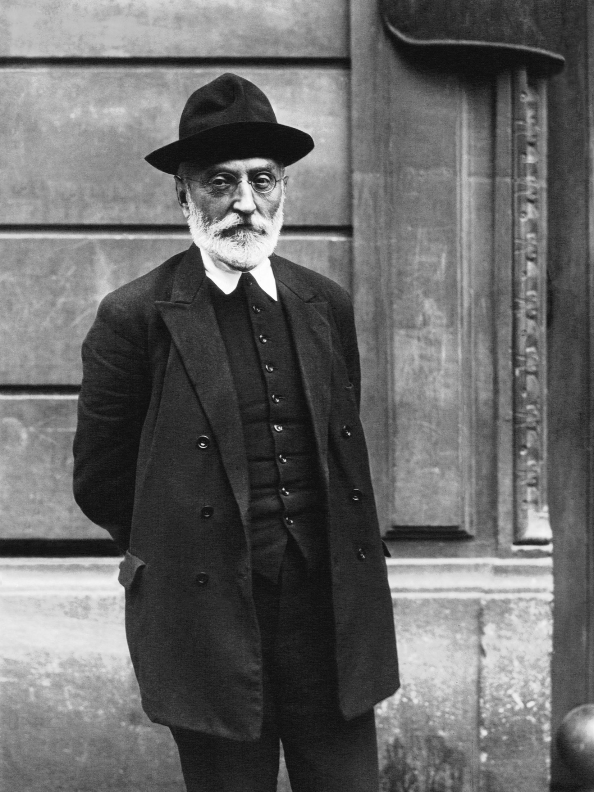

18. gaia · Espainiar pentsamendua: Unamuno, Ortega, Zambrano
Espainiar pentsamenduan sartzeko
Heideggerrek izateaz galdetzen zuen bitartean, eta Sartrek libre izatera kondenatuak gaudela aldarrikatzen zuen bitartean (§63-§64), Espainian, bide propio batetik eta bere erara, hiru pentsalari bizitza filosofiaren erdigune bihurtzen ari ziren. Ez zuten existentzialismoa kopiatzen: neurri batean aurrea hartzen diote —Unamunok bere obra nagusia Heideggerrek baino hamalau urte lehenago idazten du— eta neurri batean harekin parez pare jarduten dute solasean. Partekatzen dutena mesfidantza bera da: arrazoi hotz eta abstraktuarekiko mesfidantza, dena kanpotik uler dezakeela uste duen horrekikoa, bizi, sufritu eta hiltzen dena kontuan hartu gabe.
Horregatik balio die hirurei keinu berak: arrazoiari abizen bat jartzea, bizitzari lotuko diona. Ordena kronologikoan jarraituko diogu, maisutza baten ordena ere badena. Lehenik, Miguel de Unamuno, sentimendu tragikoaren gizona, arrazoia bihotzaren aurkako borroka gisa bizi duena (§65). Gero, haren arerio gazteagoa, José Ortega y Gasset, bizi-arrazoi baten bila dabilena, bizitza pentsatzeko gauza izango dena kontzeptuaren argitasunari uko egin gabe (§66). Eta, azkenik, Ortegaren ikaslerik originalena, María Zambrano, urrats bat gehiago eman eta arrazoi poetiko bat aldarrikatzen duena, kontzeptuak kanpoan uzten duenarekin adiskidetua (§67).
Hiru ahots dira, ez eskola bat, eta sarritan eztabaidan aritzen dira elkarrekin. Baina, elkarrekin, filosofatzeko modu penintsular bat marrazten dute: bizitza konkretutik, hizkuntza biziarekin eta pentsamenduak literatura ukitzeari beldurrik gabe.
§65 · Miguel de Unamuno
Haragizko eta hezurrezko gizakia. Miguel de Unamunok (1864-1936) —bilbotarra, Salamancako Unibertsitateko katedraduna eta errektorea, 98ko belaunaldiko figura nagusia1— protesta batekin irekitzen du bere filosofia. Sistemen filosofiak —halaxe kexatzen da— “gizakiaz” hitz egiten du, abstraktuan: aurpegirik gabeko subjektu batez, jaiotzen ez denaz eta hiltzen ez denaz. Mamu horren aurrez aurre, haragizko eta hezurrezko gizakia jartzen du Unamunok: “jaio, sufritu eta hiltzen dena —batez ere hiltzen dena—, jaten eta edaten eta jolasten eta lo egiten eta pentsatzen eta nahi izaten duena”. Filosofia ez da jakin-min hutsetik sortzen, gizaki konkretu horrengandik eta heriotzaren aurrean duen larriduratik baizik. Honetan, Unamunok Kierkegaard luzatzen du (§62) eta existentzialismoari aurrea hartzen dio: abiapuntua ez da jakitea, existitzea baizik.

Bizitzaren sentimendu tragikoa. Haren obra nagusia Del sentimiento trágico de la vida en los hombres y en los pueblos da (1913), eta izenburuan bertan darama gaia. Tragikoa konponbiderik gabeko talka batetik jaiotzen da. Batetik, gizakiak hilezkortasun-gosea du: ez desira abstraktu bat, baizik eta bere desagerpenaren aurka errebelatzen den ni konkretu honen irrika biluzia. “Ez dut hil nahi, ez; ez dut nahi, ezta nahi izan nahi ere; beti bizi nahi dut, beti, beti”, idazten du; eta ez zaizkio aski filosofiak eskaini ohi dituen kontsolamenduak —seme-alabetan irautea, obran, besteen oroimenean, edo osotasunean baketsu urtzea—, haietako batek ere ez baitu salbatzen naizen ni hau. Bestetik, arrazoiak ez dio ezer ematen: hotzean aztertuta, arimaren hilezkortasuna ez dago frogatzerik, eta arrazoia zenbat eta zorrotzagoa izan, orduan eta gehiago bultzatzen duela ematen du ezerezerantz. Arrazoiak desegin egin ohi du, hain zuzen, bizitzak gorde nahi lukeena. Hortik tragikoa: ez da konpontzen den arazo bat, bizileku hartzen den zauri bat baizik, anestesiarik gabe, bihotzak eskatzen duenaren eta buruak eutsi diezaiokeenaren artean. Haren eleberriek ere gose hori taularatzen dute: Niebla-n (1914), Augusto Pérez pertsonaia, bere egileak “hiltzear” duen fikziozko izaki bat besterik ez dela jakitean, errebelatu egiten da eta aurre egiten dio, bizitzen jarraitzeko eskubidea aldarrikatzeko —gutariko edonoren ispilua, nor bere heriotzaren aurrean—.
Arrazoia eta fedea, agonian. Unamunok ez du gatazka konpontzen; uko egiten dio, konpontzea faltsutzea litzatekeela uste baitu. Ez arrazoiak garaitzen du betikotasun-irrika, ez irrikak isilarazten du arrazoia: biak bizirik geratzen dira, nork bere aldera tiraka, eta etenik gabeko tentsio horretatik sortzen da berak larria deitzen diona. Fedea, harentzat, ez da ziurtasun lasai eta oinordetzan jasoa, arrazoiaren aurka sinetsi nahi izatea baizik: frogarik gabe dagoela dakien borondate-egintza bat, eta horrexegatik egunero berritu beharrekoa. Borroka horri agonia deitzen dio, hitzaren zentzu grekoan: ez heriotzaren atari, borroka baizik2. Muturreraino eraman zuen San Manuel Bueno, mártir (1930) eleberrian: protagonista herri bateko apaiz bat da, beste bizitzarekiko fedea galdu duena, baina bere eliztarrenari eusten diona eta bere zalantza isilean gordetzen duena, haienganako maitasunez, kontsolamendua ken ez diezaien. Sentimendu tragikoa da, haragi eginda; eta pertsonaia bat da, ez argudio bat: Unamunok eleberritan eta paradoxatan pentsatzen du, uste baitu horrela bakarrik pentsa daitekeela benetan bizitza. Haren azken heroia Don Kixote da: arrazoi ororen kontra sinesten duen hura sortzen duen fede horren santu laiko bihurtzen du; bizi-jarrera horri kixotismoa deitu zion.
Intrahistoria. Bada Unamunorengan bigarren aurkikuntza bat, lasaiagoa, gogoan hartzea komeni dena. Historia zaratatsuaren azpian —gerrena, erregeena eta datena— berak intrahistoria deitzen duena dago taupadaka: jende anonimoaren bizitza isil eta egunerokoa, lurra lantzen, umeak hazten eta otoitz egiten duen jendearena, herri bati benetan eusten diona. “Itsasoaren hondoa” da, isil eta iraunkor, azaleko olatuen azpian; olatuak harrotu eta igaro egiten dira. Komunitate baten benetako jarraitutasuna ez dago haren gertaera handietan, ia inoiz kontatzen ez den bilbe apal horretan baizik; eta horregatik, iradokitzen du Unamunok, herri baten egia gehiago dago haren ohituretan eta eguneroko hizkuntzan, haren gudu-datetan baino.
Unamunok oihuka pentsatu zuen, paradoxatan eta kontraesanetan, uste baitzuen bizitza bera kontraesankorra dela eta hura ordenatzen duen sistemak traizionatu egiten duela. Izaera horri leial azkeneraino, Salamancako bere etxean itxita hil zen 1936ko abenduan, militar altxatuei jendaurrean aurre egin eta aste gutxira —“garaituko duzue, baina ez duzue konbentzituko”—. Haren arerio gazteagoak justu kontrako apustua egingo du: bizitza pentsatu hark ere, bai, baina kontzeptuaren argitasunarekin. Harengana goaz orain.
§66 · Ortega y Gasset: bizi-arrazoia
Ni neu naiz eta nire zirkunstantzia. José Ortega y Gasset (1883-1955) madrildarra da XX. mendeko filosofo espainiar eragin handienekoa: hainbat belaunalditako maisua, prosalari liluragarria eta Revista de Occidente-ren sortzailea; aldizkari horren bidez sartu zen Espainian Europako pentsamenduaren zati handi bat. Bere garaiko grina erregenerazionistak bultzatuta —Espainia bere atzerapenetik ateratzea, Europara irekiz—, filosofia zeregin publiko bihurtu zuen, eta haren pentsamendua hiru alditan heldu zen: gaztaroko objektibismotik (artean subjektiboan ikusten zuen errakuntza) perspektibismora eta, azkenik, arraziobitalismora. Haren filosofia osoa formula batean sartzen da, oso gazterik eman zuena, Meditaciones del Quijote-n (1914): “Ni neu naiz eta nire zirkunstantzia, eta hura salbatzen ez badut, ez naiz neu ere salbatzen”. Nia ez da substantzia isolatu bat, gero mundura begiratzen duena, Descartesen cogito-a bezala (§36); baina mundua ere ez da dena. Lehen errealitatea bien batasuna da: ni, beti, nire zirkunstantziarekin batera; eta zirkunstantzia horrek bi maila ditu —historiko-kulturala (nire garaia, nire tradizioa) eta partikularra (nire gorputza, nire familia, egunero haien artean bizitzea egokitzen zaidan gauzak eta jendea)—. Hortik ondorio bat, Ortegak metodo bihurtuko duena: errealitatearen datu bakar bat ere, txikiena izanda ere, ez da filosofiatik kanpo geratzen. “Zirkunstantzia salbatzea” haren kargu egitea da, eta zentzua ematea; eta hura salbatuz bakarrik salbatzen naiz ni.

Perspektibismoa. Hortik dator haren perspektibismoa. Bizitza bakoitza munduari buruzko ikuspuntu bakar eta ordezkaezin bat da: “nire begi-ninia dagoen tokian ez dago beste bat ere”. Ortegak gogoan hartzea komeni den adibide batekin azaltzen du: Guadarramako mendilerroa ez da bera Madrildik begiratuta eta Segoviatik begiratuta. Bietatik zein da benetako ikuspegia? Galderak ez du zentzurik: biak dira, berdin egiazkoak, eta elkar osatzen dute —hobeto ezagutzen da mendilerroa Madrildik eta Segoviatik begiratuta, alde bakar batetik baino—. Horrela, Nietzscheren perspektibismoa jasotzen du (§60), egia oro interpretazio bihurtzen zuena, baina baiezko bihurtzen du: perspektibak ez du errealitatea desitxuratzen, hartara iristeko modu bakarra da, eta egia ikuspuntuen osaketa progresiboa da. Faltsua den gauza bakarra “inongo lekutatik” egia bat nahi izatea da:
Errealitateak, paisaia batek bezala, perspektiba infinituak ditu, guztiak berdin egiazko eta benetakoak. Perspektiba faltsu bakarra, bakarra izan nahi duen hura da.
Hortik bi ondorio ateratzen ditu Ortegak. Bat, ezagutzari buruzkoa: nire begirada partziala bada eta besteenek nireari falta zaiona ekartzen badute, besteak objektibotasunarentzat oztopo izateari uzten diote eta harentzat beharrezko bihurtzen dira —indibidualismoa, gu geure baitan itxi beharrean, ezagutza aberatsago baten baldintza da—. Bestea, zibikoa: perspektiba batek ere egia agortzen ez badu eta guztiak behar badira hura osatzeko, tolerantzia kontzesio bat izateari uzten dio eta ezagutzeko nahiz elkarrekin bizitzeko baldintza bihurtzen da.
Bizi-arrazoia. Haren ideiarik berezkoenak faltsutzat jotzen duen hautabide bati erantzuten dio. Arrazionalismoak (§34) bizitzari bizkarra ematen dion arrazoi huts eta abstraktu batean jarri zuen konfiantza; irrazionalismoak, hartaz aspertuta, arrazoiari uko egin zion. Ni vitalismo ni racionalismo (1924) artikuluan, Ortegak hirugarren bide bat bilatzen du: bizi-arrazoi bat, bizitzaren zerbitzura jarria eta hartan errotua. Horrekin bi gehiegikeriatatik urruntzen da, batetik zein bestetik: arrazionalismotik, mugarik gabeko arrazoi bat amesten duelako, dena ezagutzeko eta dena gobernatzeko gauza; eta Bergson baten bitalismotik, dena intuizioaren eta bizi-bulkadaren esku utzita, arrazoia bigarren mailan uzten duelako. Ortegarentzat arrazoia bizitzaren barruan ematen da, hark inguratua eta mugatua: ez da errealaren legegilea, haren kronista baizik. Zeren bizitza baita errealitate erradikala: ez materia, ez espiritua, baizik eta beste gauza oro agertzen den eremua. Horregatik, irauli egiten du filosofia aisiari lotzen zion hierarkia zaharra: “ez gara pentsatzeko bizi, bizitzeko pentsatzen dugu baizik”. Eta bizitzea ez da gauza egin bat, egiteko bat baizik: nork bere burua zirkunstantzia batera jaurtia aurkitzea, eta urrats bakoitzean erabaki behar izatea zer egin harekin —proiektua, askatasuna eta, aldi berean, muga—. Bizitza emana zaigu, baina ez zaigu eginda emana: geuk egin behar dugu.
Arrazoi historikoa. Bizitza egitekoa bada eta ez natura finkoa, orduan gizakia ez da gauza bat bezala ulertzen, historia bat bezala baizik. “Gizakiak ez du naturarik; historia du… ordea” (Historia como sistema, 1935): izan garena gara, eta orainaldi bakoitza zoru baten gainean sostengatzen da —iragana— eta proiektu baterantz jaurtitzen da —etorkizuna—. Horregatik, bizitzaren zerbitzura dagoen arrazoiak historikoa izan behar du, eta narratiboa ere bai: giza zerbait ulertzeko —zer den “maitasuna”, zer den nazio bat— ez da haren betiereko esentzia bilatzen, haren historia kontatzen da. Kant baten arrazoi hutsaren aurrean, arrazoi narratibo bat. Eta iragan hori aldi batetik bestera aldatzen denez, historiaren motorra belaunaldiak dira: bakoitza sinesmen apur bat desberdinekin iristen da mundura, aurrekoenekin alderatuta, eta errelebo horretan —beti puntu gatazkatsu samarra— egiten du aurrera denbora historikoak. Azterketa berari dagokio beste bereizketa hau ere: eduki —eta eztabaidatu— egiten ditugun ideien eta ohartu gabe barruan gauden sinesmenen artekoa: “ideiak eduki egiten dira; sinesmenetan egon egiten da”. Sinesmenak zapaltzen dugun zoru pentsatu gabea dira; haietako bat kordokatzen denean, zalantza bat irekitzen da eta krisia dator, eta berriz pentsatu behar da ziurtzat ematen zena3.
Masa-gizakia. Azterketa hori bera gizartera eraman zuen Ortegak, bere obrarik irakurrienean, La rebelión de las masas-en (1930). Haren tesia ez da ekonomikoa, morala baizik: bizitza publikoan masa-gizakia sartu da oldarrean, eta hori ez du klaseak definitzen, ez diruak, jarrera batek baizik —bere buruaz pozik dagoen “batez besteko gizakia”, eskubide guztiak dituela eta betebehar bat ere ez uste duena, eta besteei bere buruari eskatzen ez diena eskatzen diena—. Haren aurrean, gutxiengoa edo elitea ez da kasta pribilegiatu bat, bere buruari diziplina eta eskakizunak ezartzen dizkiona baizik; bien arteko aldea ez da kantitatezkoa, kalitatezkoa baizik. Ortegak gaur egun ere ezagun diren hiru irudiren bidez erretratatzen du: jauntxo asebetea, dena zor zaiola ziurtzat ematen duena; espezialista barbaroa, zientzia baten txoko bat menderatzeagatik edozertaz iritzia emateko baimena duela uste duena; eta ume mainatua, bere apeta lege bihurtzen duena. Eta, Marxek ez bezala (§58), Ortegak ukatu egiten du historia bermatuta dagoenik: kultura edozein unetan kraska daitekeen berniz bat besterik ez da, eta azpian, ukitu gabe, basakeria dago zain.
Guri gogoan hartzea interesatzen zaiguna arraziobitalismo hori da: bizitzarekin eta denborarekin adiskidetutako arrazoia. Eta horren gainean lan egingo du, hain zuzen, haren ikaslerik sakonenak, María Zambranok: bizi-arrazoia onartuko du, berehala kontzeptuari lotuegia aurkitzeko.
§67 · María Zambrano: arrazoi poetikoa
Bizi-arrazoitik arrazoi poetikora. María Zambrano (1904-1991) malagarra Madrilen hezi zen, Ortegarekin eta Xavier Zubirirekin, eta bere maisuaren bizi-arrazoitik abiatzen da (§66); baina laster objekzio erabakigarri bat egiten dio. Bizi-arrazoiak arrazoia bizitzan errotzen du, ados, baina arrazoi diskurtsibo bat izaten jarraitzen du, kontzeptuz, definizioz eta argudioz aurrera egiten duena. Eta kontzeptuak, bere objektua harrapatzeko, bortxatu egiten du: bereizi egiten du, finkatu, eta harengan berezi, bizi eta ilun zen guztiaz biluzten du. Kanpoan geratzen da, horrela, errealaren eskualde oso bat —arima, sufrimendua, sakratua, erabat esan ezinik sentitzen dena—, filosofiak, Platonez geroztik, poesiaren aldean utzia zuena. Filosofía y poesía-n (1939) planteatu zuen jada Zambranok norgehiagoka zahar hori: filosofiak presaka bilatzen du bat eta unibertsal dena; poesia, leial eta presarik gabe, ematen zaion anitz eta konkretuarekin geratzen da. Haren ahalegina biak adiskidetzea izango da, arrazoi poetikoa deitzen dion ezagutza-modu batean: pentsatzearen zorroztasuna, kontzeptuaren bortxarik gabe.

Zer den arrazoi poetikoa. Ez da arrazoiari uko egitea sentimendu hutsaren alde, ezta filosofiaren ordez poesia egitea ere. Poesiarekin ezkontzen den arrazoi bat da: pentsatzea eta sentitzea ezagutza-egintza berean batzen dituena. Gauzez jabetzen den, haiek definitzen eta bereganatzen dituen arrazoi bortitzaren aurrean, arrazoi poetikoa harkorra da: itxaron egiten du, entzun egiten du, eta gauzak berez ager daitezen uzten du. Zambranok irudi eder batekin pentsatzen du, basoko argiuneen irudiarekin: zuhaitzen arteko argi-hutsarte horietara ez da iristen indarrez bilatuz, baizik eta gelditurik, itxaronaldi erne batean, egia ager dadin. Horregatik, haren idazkerak berak forma aldatzen du: ez du frogatzen, argitara ekartzen du; haren hitzak ez du gauza harrapatu nahi, ager dadin utzi baizik, goiz-argiaren argitasuna bezala —hortik datorkio aurorekiko zaletasuna—. Harentzat, ezagutzea ez da hainbeste ehizatzea, jasotzea baizik.
Arimaren jakintza eta jainkozkoa. Irekitasun horretan, arrazoi modernoak kanporatuak zituen bi gauza berreskuratzen ditu Zambranok. Bata arima bera da: kanpora bakarrik —mundura eta haren objektuetara— begiratzen duen arrazoi baten aurrean, barruko jakintza bat aldarrikatzen du berak: ametsena, bizi izandako denborarena, aitortzen den bizitzarena. Bestea sakratua eta jainkozkoa dira: El hombre y lo divino-n (1955) arakatzen du nola sakratuaren jatorrizko esperientziatik —izenik izan aurretik hunkitu eta ikaratzen gaituen horretatik— jaioz joan ziren jainkoak eta, denborarekin, filosofia bera; ez du dogma gisa tratatzen, pentsamenduak alde batera utzi beharko ez lukeen giza esperientziaren dimentsio gisa baizik. Eta hori guztia pietateak gobernatzen du; fintasunez definitzen du berak: “bestelakoarekin egoki tratatzen jakitea” —desberdinarekin, ilunarekin, ni bezalakoa ez denarekin—. Arrazoi poetikoa, horrela, arrazoi pietatezkoa da, abegikorra arrazoi diskurtsiboak, nahasitzat joz, mespretxatu ohi duenarekin.
Erbestea baldintza gisa. Haren pentsamendua ez da ulertzen haren biografiarik gabe. Errepublikanoa eta gerra galdu zuen Espainiaren alaba, Zambrano 1939an atera zen herrialdetik, eta erbeste luze-luzea bizi izan zuen —Frantzia, Mexiko, Habana, Puerto Rico, Erroma, baita Suitzako Jurako herrixka bat ere—, berrogei urtetik gorakoa; ez zen itzuli 1984ra arte. Eta ez zuen zoritxar gisa bakarrik pairatu: pentsatu egin zuen. Erbestea kategoria filosofiko bihurtu zuen: gabetzetik eta bazterretik ezagutzeko modu bat, non dena galdu duenak ikusten baitu eroso kokatua dagoenak ikustera iristen ez duena. Deserri hartan idatzi zuen bere obraren onena —El hombre y lo divino, Claros del bosque (1977)—, eta handik iritsi zitzaion, jada oso adinekoa zela, aitortza: Asturiasko Printzea Saria 1981ean, Espainiara itzulera 1984an eta, 1988an, Cervantes Saria, gaztelaniazko letren gorena, ordura arte emakume batek ere jaso gabea. Madrilen hil zen 1991n. Kanpoan utzitakoa abegiz hartzen duen arrazoia pentsatu zuen hura, bera ere, luzaroan, ahots baztertua izan zen.
Hiru ahots hauekin —Unamunoren borroka, Ortegaren argitasuna, Zambranoren entzutea— ixten da arrazoia bizitzatik eta sentimendutik pentsatzeko modu bat. Baina XX. mendeak beste gudu handi bat ere jokatu zuen arrazoiaren inguruan: totalitarismoen hondamendiaren ostean, gizartean, zientzian eta politikan arrazoiarengandik zer espero daitekeen galdetzen duena. Fronte horri —Frankfurteko Eskolatik Rawlsera— eskaintzen zaio hurrengo gaia (§68).
Unamuno idazleari zor diogu, bide batez, gaurko feminismoan berragertzen den keinu bat: 1921ean bera izan zen gaztelaniaz sororidad hitza erabili zuen lehena —“Antigona soror zen, arreba… komeniko litzateke agian sororitateaz hitz egitea, emakumeen arteko ahizpatasunaz”—, RAEk hitza onartu (2018) eta ideia Beauvoirrekin lotu (§77) baino ia mende bete lehenago.↩︎
Hortik dator haren beste obra baten izenburua, La agonía del cristianismo (1925): ez kristautasunaren heriotza, baizik eta kristautasuna etengabeko barne-borroka gisa ulertua. Unamunorentzat, agoniarik gabeko fede bat —zalantzarekin borrokatzen ez dena— hilda dago.↩︎
Bereizketa Ideas y creencias-ekoa da (1940); krisi historikoa sinesmen kolektibo batek huts egiten duenean dator, eta kultura da garai batek hutsune horretan orientatzen saiatzeko darabilen ideia-bilduma.↩︎